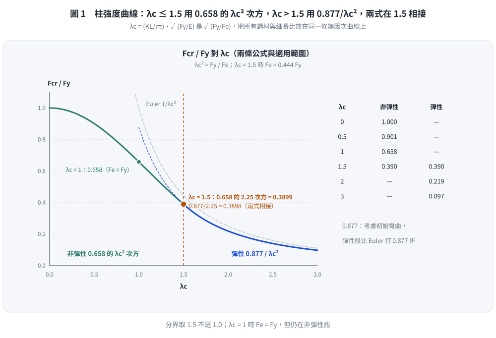
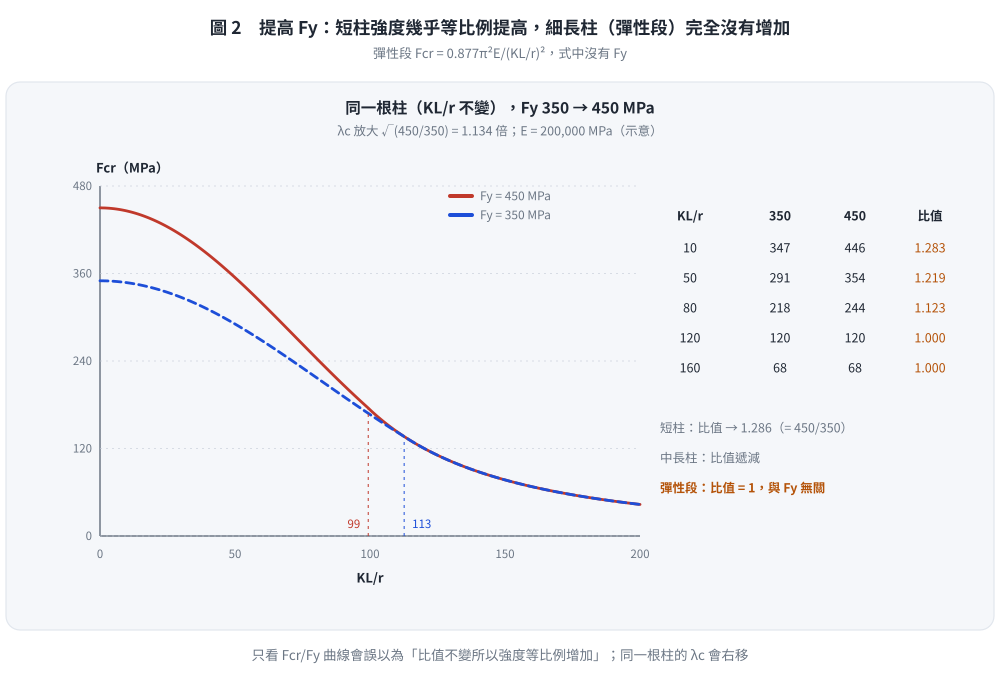
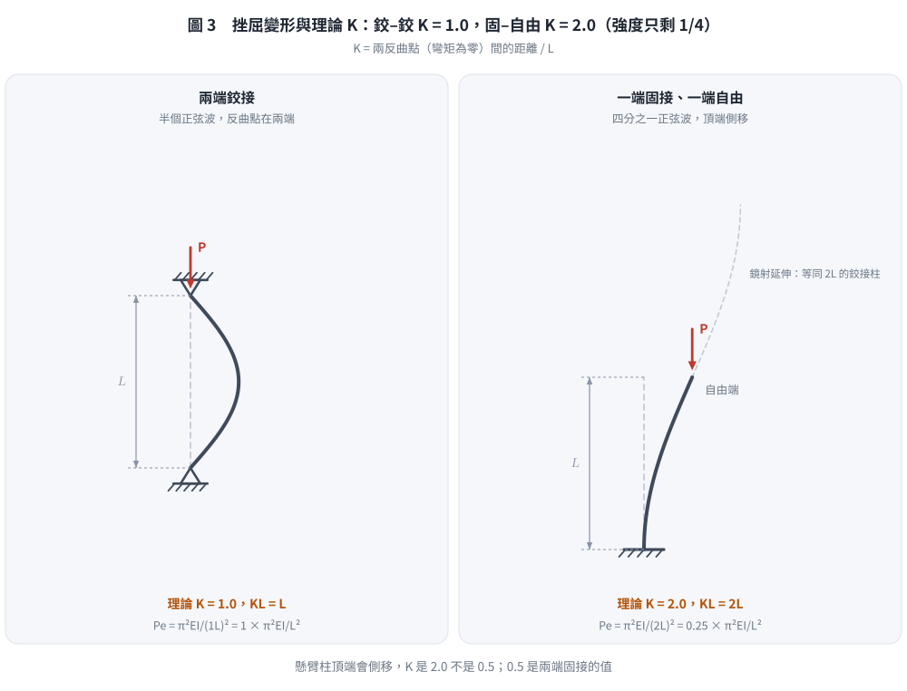

📄 題目正本：考卷原文・附圖・判讀清單（已確認）
SS-2014-1 題目正本
本檔只記錄考卷上寫了什麼、圖上畫了什麼，不含任何解法。解析見同資料夾
SS-2014-1.md。
判讀清單經使用者確認前，狀態為「待確認」；確認後本檔原則上不再修改（改動須回考卷原圖並記 log）。
| 項目 | 內容 |
|---|---|
| 考卷 | raw/exams/SS-2014_鋼結構設計.pdf 第 1 頁（全一張之正面），第一題 |
| 考年 | 民國 103 年（2014） |
| 配分 | 25 分（㈠ 10、㈡ 10、㈢ 5） |
| 附圖 | 無（題目無附圖；資料夾內 hand-*.png 為解析用手繪，不屬考卷） |
| 判讀狀態 | 已確認（2026-11-02 使用者確認，含「不確定」項之解讀；轉錄同日，PyMuPDF 110 dpi 全頁目視，盲讀後才比對既有解析） |
1. 考卷原文（逐字）
一、根據 AISC-LRFD 可得柱挫屈強度以下式表示：
$$F_{cr} = (0.658)^{\lambda_c^2}F_y$$
$$F_{cr} = \left(\frac{0.877}{\lambda_c^2}\right)F_y$$㈠請推導 $\lambda_c = \dfrac{KL}{r\pi}\sqrt{\dfrac{F_y}{E}}$。（10 分）
㈡繪出 $F_{cr}/F_y$ 與 $\lambda_c$ 之關係圖，及標示兩公式適用範圍；並說明當柱鋼板降伏強度由 350 MPa 提升至 450 MPa 時，柱挫屈強度的變化。（10 分）
㈢繪出柱兩端同為鉸接及一端固接另一端為自由端的兩種挫屈變形及相對應的理論 K 值。（5 分）
2. 考卷給的公式、附表與參數
- 兩條 $F_{cr}$ 公式（見 §1）；未標適用範圍（題目㈡要求考生自行標示）。
- 本卷注意事項只有㈠㈡；考卷沒給 $E$、柱的長細比等數值。
3. 附圖
（無）
4. 判讀清單
「把握」標不確定者請優先確認；解讀類項目（題目用字的意思）另標「解讀」。
| # | 項目 | 判讀 | 圖上／題文依據 | 把握 |
|---|---|---|---|---|
| 1 | ㈡「柱挫屈強度的變化」 | 比較同一根柱（$KL/r$ 不變）的 $F_{cr}$（強度本身），不只是 $F_{cr}/F_y$ | 題文用字（解讀） | 不確定 → 使用者確認 |
| 2 | ㈡ 是否需算數值 | 題未給 $KL/r$，以定性說明為主，可配示例數值 | 題文（解讀） | 不確定 → 使用者確認 |
| 3 | 公式形式 | $(0.658)^{\lambda_c^2}$ 為 AISC 2005 起的寫法（與 $\exp(-0.419\lambda_c^2)$ 等值） | 題文 | 確定 |
| 4 | ㈠ 推導範圍 | 只要求推導 $\lambda_c$ 的定義式 | 題文 | 確定 |
| 5 | ㈢ 要哪種 K | 理論 K 值（不是設計建議值） | 題文「理論 K 值」 | 確定 |
| 6 | ㈢ 兩種端部 | 兩端鉸接；一端固接一端自由 | 題文 | 確定 |
轉錄：2026-11-02（SS-U1-1 題目正本推廣・批 2）｜確認：2026-11-02 使用者確認
考題編號：SS-2014-1
主分類： SS-U1-1 拉力及壓力桿件
副分類： 無
設計法： LRFD
標籤： 壓力桿件 整體挫屈 柱強度曲線 λc推導 有效長度 殘留應力 非彈性挫屈 彈性挫屈
1. 題目（考卷原文見題目正本）
考卷原文、公式／附表、附圖與判讀清單（已確認）見
SS-2014-1-problem.md。本節只列解題時最容易讀錯的地方與本解使用的記號；題意以題目正本為準。
常見誤讀
| 項目 | 正確判讀 | 常見誤讀 |
|---|---|---|
| 兩式適用範圍 | 考卷未標，㈡要求考生自行標示（$\lambda_c = 1.5$ 分界） | 當成題目已給 |
| ㈡「挫屈強度的變化」 | 同一根柱（$KL/r$ 不變）$F_{cr}$ 本身的變化 | 只比較 $F_{cr}/F_y$ |
| ㈢ | 理論 K 值 | 答設計值（如懸臂 2.1） |
| 曲線取值 | $\lambda_c = 0.5$ 時指數是 $\lambda_c^2 = 0.25$：$0.658^{0.25} = 0.901$ | 算成 0.878（本解析舊版的錯） |
本解記號： $\lambda_c$、$F_{cr}$、$F_y$、$E$；$F_y$ = 350、450 MPa。
2. 考題核心精神與出題者意圖 (Core Concepts & Examiner's Intent)
核心觀念：
- 為什麼 LRFD 用 $\lambda_c$ 這個無因次化參數？→ 它是「降伏應力與彈性挫屈應力之比值的平方根」，統一了不同鋼材強度的挫屈行為
- 高強度鋼（HighFy）用於細長壓力桿件有何盲區？→ 彈性挫屈時，Fcr 與 Fy 無關，高強度鋼優勢消失
出題意圖：
1. 測試考生能否從 Euler 公式「推導」出 λc，而非死背
2. 測試對曲線形狀的理解（兩段式、分界點）
3. 測試材料升級時的工程判斷：高強度鋼≠高挫屈強度（細長柱）
陷阱預警：
- 混淆 λc（無因次化細長比）與 KL/r（有因次細長比）
- 誤以為提高 Fy 對所有柱都有效（細長柱完全沒有幫助）
- 忘記兩公式在 λc = 1.5 處的連續性（用此驗算公式是否正確）
3. 解題戰略地圖與陷阱分析 (Strategic Roadmap & Trap Analysis)
作戰計畫：
Step 1：寫出 Euler 彈性挫屈應力 Fe
Step 2：定義 λc² = Fy/Fe，推導 λc 公式
Step 3：驗算分界點（λc=1.5時兩公式結果相同）
Step 4：繪製曲線，標示兩段與分界點
Step 5：分析 Fy 提升的影響（分彈性、非彈性兩段討論）
Step 6：畫挫屈變形圖，標示K值
關鍵陷阱：
1. λc 的推導起點：必須從 Euler 公式出發，不能直接背公式
2. Fy 提升的討論：必須區分彈性與非彈性兩個範圍，各有不同結論
3. K值的理論與設計值：本題要求「理論K值」，不是設計建議值
4. 分界點驗算：可用兩公式在 λc=1.5 互相驗算，展現邏輯嚴謹度
3.5 變數層次分析（Variable Hierarchy Analysis）
複習提示：解題後，在每個卡住的知識點「卡關?」欄標記
⚠；第二次複習時只看有⚠的項目。
最終目標： 從 Euler 公式推導 $\lambda_c$ → 繪製柱強度曲線 → 分析 $F_y$ 提升的影響 → 畫挫屈模態及理論 K 值
主要公式（$\boxed{\phantom{x}}$ = 未知，待推導）
$$F_e = \frac{\pi^2 E}{(KL/r)^2} \quad (\text{Euler 挫屈應力})$$
$$\lambda_c^2 \equiv \frac{F_y}{F_e} \quad \Rightarrow \quad \boxed{\lambda_c} = \frac{KL}{r\pi}\sqrt{\frac{F_y}{E}}$$
$$F_{cr}/F_y = \begin{cases} 0.658^{\lambda_c^2} & \lambda_c \leq 1.5 \\ 0.877/\lambda_c^2 & \lambda_c > 1.5 \end{cases}$$
L1：題目直接給定
| 符號 | 數值 | 說明 |
|---|---|---|
| $F_{cr}$ 公式 | 兩段式（題目給定） | 非彈性（$\lambda_c \leq 1.5$）/ 彈性（$\lambda_c > 1.5$） |
| 分界點 | $\lambda_c = 1.5$ | 兩公式適用範圍邊界 |
| 升強情境 | $F_y$：350 → 450 MPa | 討論挫屈強度變化 |
| 邊界條件A | 兩端鉸接 | 畫挫屈圖 |
| 邊界條件B | 一端固接、一端自由 | 畫挫屈圖 |
L2：需知識點推導
Step 1：推導 $\lambda_c$
| 符號 | 公式 / 來源 | 卡關? |
|---|---|---|
| $P_e$ | $\pi^2 EI/(KL)^2$（Euler 臨界載重） | |
| $F_e$ | $P_e/A = \pi^2 E/(KL/r)^2$（Euler 挫屈應力） | |
| $\lambda_c^2$ | 定義為 $F_y/F_e$（降伏應力 / 彈性挫屈應力） | |
| $\lambda_c$ | $\sqrt{F_y/F_e} = (KL/r\pi)\sqrt{F_y/E}$ |
Step 2：分界點驗算
| 符號 | 公式 / 來源 | 卡關? |
|---|---|---|
| 非彈性公式在 $\lambda_c=1.5$ | $0.658^{2.25} = 0.390$ | |
| 彈性公式在 $\lambda_c=1.5$ | $0.877/2.25 = 0.390$ ✓ |
Step 3：$F_y$ 提升影響分析
| 範圍 | 影響 | 卡關? |
|---|---|---|
| 彈性挫屈段（細長柱） | $F_{cr} = 0.877\pi^2E/(KL/r)^2$，與 $F_y$ 完全無關 | |
| 非彈性挫屈段 | $F_{cr}$ 有所提升，但比例小於 $F_y$ 升幅 | |
| 極短柱 | $F_{cr} \approx F_y$，升強效果最大 |
Step 4：理論 K 值
| 邊界條件 | K 值 | 卡關? |
|---|---|---|
| 兩端鉸接（P-P） | $K = 1.0$（半正弦波） | |
| 一端固接一端自由（F-Free） | $K = 2.0$（四分之一正弦波） |
L3：深層知識（不懂就卡住）
| 知識點 | 說明 | 卡關? |
|---|---|---|
| $\lambda_c$ 的推導起點必須是 Euler 公式 | 背公式不算推導；考試要求「寫出推導過程」，需從 $P_e = \pi^2EI/(KL)^2$ 出發 | |
| $\lambda_c = 1.5$ 分界點的物理意義 | $F_e = F_y/2.25$；低於此點柱在挫屈前已局部降伏（非彈性），高於此點純彈性挫屈 | |
| 殘留應力對曲線的影響 | 0.658 係數隱含殘留應力（最大 0.3$F_y$）與初始幾何缺陷的實驗回歸修正 | |
| 彈性挫屈段 $F_{cr}$ 與 $F_y$ 無關 | 高強度鋼用於細長柱完全無效；$F_{cr} = 0.877\pi^2E/(KL/r)^2$ 只和 $E$、$KL/r$ 有關 | |
| 理論 K 值 vs AISC 設計 K 值 | 理論值假設完全固定/完全自由；設計值考慮實際接合半剛性（固接端用 K > 理論值） |
4. 步驟化詳細計算過程 (Step-by-Step Detailed Calculation)
(一) 推導 λc = KL/(rπ) × √(Fy/E)
Step 1：Euler 彈性挫屈臨界載重
彈性理論中，完美直柱的彈性挫屈（尤拉挫屈）臨界載重：
$$P_e = \frac{\pi^2 EI}{(KL)^2}$$
對應的挫屈臨界應力（除以斷面積A，利用 $r^2 = I/A$）：
$$F_e = \frac{P_e}{A} = \frac{\pi^2 E I}{(KL)^2 A} = \frac{\pi^2 E}{(KL/r)^2}$$
Step 2：定義無因次化細長比 λc
AISC-LRFD 定義 $\lambda_c$ 使得：
$$\lambda_c^2 \equiv \frac{F_y}{F_e}$$
即 $\lambda_c$ 是「降伏應力與彈性挫屈應力比值」的平方根，代表桿件相對細長程度。
Step 3：代入 Fe 展開
$$\lambda_c^2 = \frac{F_y}{F_e} = \frac{F_y}{\dfrac{\pi^2 E}{(KL/r)^2}} = \frac{F_y \cdot (KL/r)^2}{\pi^2 E}$$
取正平方根：
$$\boxed{\lambda_c = \frac{KL}{r} \cdot \frac{1}{\pi} \cdot \sqrt{\frac{F_y}{E}} = \frac{KL}{r\pi}\sqrt{\frac{F_y}{E}}}$$
Step 4：物理意義確認
- $\lambda_c = 1.0$：$F_e = F_y$（彈性挫屈應力恰等於降伏應力）
- $\lambda_c = 1.5$：$F_e = F_y/2.25 = 0.444F_y$（兩公式分界點）
- $\lambda_c \to 0$：極短柱，$F_{cr} \to F_y$（全斷面降伏）
- $\lambda_c \to \infty$：極細長柱，$F_{cr} \to 0$（幾乎無強度）
驗算：分界點 λc = 1.5 時兩公式結果應相同
非彈性公式：$F_{cr}/F_y = 0.658^{1.5^2} = 0.658^{2.25} = e^{2.25 \times \ln 0.658} = e^{-0.9417} = 0.3899$
彈性公式：$F_{cr}/F_y = 0.877/1.5^2 = 0.877/2.25 = 0.3898$ ✓（兩者吻合，差 0.0002，取三位均為 0.390）
(二) Fcr/Fy 與 λc 之關係圖及 Fy 提升影響
曲線關鍵數值：
| $\lambda_c$ | $F_{cr}/F_y$（非彈性） | $F_{cr}/F_y$（彈性） | 說明 |
|---|---|---|---|
| 0 | 1.000 | — | 極短柱，全塑性 |
| 0.5 | 0.901 | — | $0.658^{0.25}$ |
| 1.0 | 0.658 | — | $F_e = F_y$ |
| 1.5 | 0.390 | 0.390 | 分界點（兩公式相交） |
| 2.0 | — | 0.219 | |
| 3.0 | — | 0.097 |
曲線特徵：
- 非彈性段（$\lambda_c \leq 1.5$）：$F_{cr}/F_y = 0.658^{\lambda_c^2}$，凹下曲線，考慮初始缺陷與殘留應力
- 彈性段（$\lambda_c > 1.5$）：$F_{cr}/F_y = 0.877/\lambda_c^2$，雙曲線，僅打折0.877考慮初始彎曲缺陷

圖 1 柱強度曲線：$\lambda_c \le 1.5$ 用 $0.658^{\lambda_c^2}$，$\lambda_c > 1.5$ 用 $0.877/\lambda_c^2$，兩式在 1.5 相接（約 0.390）。這張圖攔的是分界取 $\lambda_c = 1.0$、彈性段直接用 Euler 而沒乘 0.877。
Fy 由 350 MPa 提升至 450 MPa 時的影響分析：
核心公式回顧：
$$\lambda_c = \frac{KL}{r\pi}\sqrt{\frac{F_y}{E}}$$
對同一物理柱（相同 $KL/r$），$F_y$ 由 350 → 450 MPa：
$$\frac{\lambda_{c,\text{new}}}{\lambda_{c,\text{old}}} = \sqrt{\frac{450}{350}} = \sqrt{1.286} = 1.134$$
即同一根柱子在強度曲線上「向右移動」1.134倍。
分範圍討論：
①彈性挫屈段（細長柱，$\lambda_c > 1.5$）：
$$F_{cr} = \frac{0.877 F_y}{\lambda_c^2} = \frac{0.877 \pi^2 E}{(KL/r)^2}$$
⚠️ 關鍵結論：彈性段的 Fcr 與 Fy 完全無關！
提高 Fy 完全沒有增加細長柱的挫屈強度。高強度鋼的優勢在細長壓力桿件中消失。
②非彈性挫屈段（中等細長，$\lambda_c \leq 1.5$）：
$$F_{cr,\text{new}} = 0.658^{\lambda_{c,\text{new}}^2} \times 450 \quad \text{vs.} \quad F_{cr,\text{old}} = 0.658^{\lambda_{c,\text{old}}^2} \times 350$$
Fcr 有所提升，但提升幅度小於 Fy 的增加比例（450/350 = 1.286）。
③極短柱（$\lambda_c \to 0$）： $F_{cr} \approx F_y$，提升幅度接近等比例，高強度鋼充分發揮。
綜合結論：
提高鋼材降伏強度（350→450 MPa）對壓力桿件的效益隨細長比增加而遞減；對彈性挫屈的細長柱完全無效。此為選用高強度鋼材應考量的核心限制。

圖 2 同一根柱把 $F_y$ 由 350 提到 450 MPa：短柱強度幾乎等比例提高，愈細長增幅愈小，彈性段完全重合。這張圖攔的是看 $F_{cr}/F_y$ 無因次曲線就以為強度等比例增加——同一根柱的 $\lambda_c$ 會右移 1.134 倍。
(三) 兩種邊界條件的挫屈變形圖與理論 K 值
案例A：兩端鉸接（Pin-Pin）
● ← 鉸接（可旋轉，不可位移）
|
| ) 挫屈後呈半正弦波
|
● ← 鉸接（可旋轉，不可位移）
- 挫屈模態：半正弦波（半波長 = L）
- 有效長度：$KL = 1.0 \times L = L$
$$\boxed{K_{\text{兩端鉸}} = 1.0}$$
- 推導：邊界條件 $M(0) = M(L) = 0$ → 最低模態為半正弦波
案例B：一端固接、另一端自由（Fixed-Free，懸臂柱）
○ ← 自由端（可旋轉、可位移）
|
| ) 挫屈後呈四分之一正弦波
|
▓ ← 固接端（不可旋轉、不可位移）
- 挫屈模態：四分之一正弦波（有效長度 = 2L，即兩倍柱長才完成一個半波）
- 有效長度：$KL = 2.0 \times L = 2L$
$$\boxed{K_{\text{固接-自由}} = 2.0}$$
- 推導：固接端 $y=0, y'=0$；自由端 $M=0, V=0$ → 最低挫屈模態相當於兩端鉸接柱長度2L的下半段
兩案例對照：
| 邊界條件 | 理論K值 | 有效長度 $KL$ | 相對強度（以兩端鉸為基準） |
|---|---|---|---|
| 兩端鉸接（P-P） | 1.0 | L | 1× |
| 一固一自由（F-F） | 2.0 | 2L | 1/4×（$P_e \propto 1/(KL)^2$） |
固接-自由柱的彈性挫屈載重僅為兩端鉸接的 1/4，此即為何懸臂柱設計必須特別謹慎。

圖 3 挫屈變形與理論 K：兩端鉸接 $K = 1.0$；固接–自由 $K = 2.0$，挫屈載重只剩 1/4。這張圖攔的是把懸臂柱 K 寫成 0.5（那是兩端固接），或把懸臂柱畫成對稱半波。
5. 關鍵爭議點與進階探討 (Critical Issues & Advanced Discussion)
①「0.877」係數的來源：
Euler 公式乘上的 0.877（$= 1/1.14$）係數，對應最大初始彎曲缺陷 L/1000（AISC 規定的柱製作容許偏差）。即考慮實際柱不可能完美直的事實。
②「0.658」係數的來源：
AISC-LRFD 非彈性公式的 0.658 源自大量實驗回歸，同時考慮：
- 初始幾何缺陷
- 殘留應力（最大 0.3Fy）
- 非線性材料行為
③設計K值 vs 理論K值：
本題求理論K值。實務設計中，考慮接合部半剛性，AISC 設計K值通常略大於理論值（保守）。
④高強度鋼的適用建議：
- 軸壓為主、$KL/r$ 大的構件：不建議使用高強度鋼（Fe 與 Fy 無關）
- 短柱、拉力桿件：高強度鋼效益顯著
- 梁（撓曲）：需考量LTB，高強度鋼同樣有限制
⑤台灣規範與AISC-LRFD的對應：
台灣《鋼結構極限設計法規範》第4.1.1節直接引用AISC-LRFD的柱強度公式，但部分版本使用不同的殘留應力模型（Fr = 0.3Fy 或 Fr = 114 MPa）。考試中以題目給定為準。
修正日期：2026-11-02（§1 全文重述改為指向題目正本 SS-2014-1-problem.md（已確認）＋常見誤讀＋本解記號；解題內容與答案不變）
修正日期：2026-11-03（解析勘誤：§4 (二) 曲線表 $\lambda_c = 0.5$ 非彈性值 0.878 → 0.901（$0.658^{0.25}$）；$\lambda_c = 1.5$ 兩式值 0.389 → 0.390（§3.5 L2 同改）；§4 (一) 驗算 $e^{-0.9434} = 0.3894$ → $e^{-0.9417} = 0.3899$；§5 ①「0.877 = 1/1.14²」→ $0.877 = 1/1.14$；§1 常見誤讀增列取值錯誤。驗證：獨立腳本重算 19 個數值 MISMATCHES: 0，另以 $e^{-0.419\lambda_c^2}$ 交叉驗算；考卷第 1 頁 150 dpi 目視核對公式）
圖解補繪：2026-11-03（向量圖 3 張，腳本 gen_SS-2014-1.py，改輸入可原地重跑；SVG 供 wiki／PDF，2× PNG 供 pptx／影片）